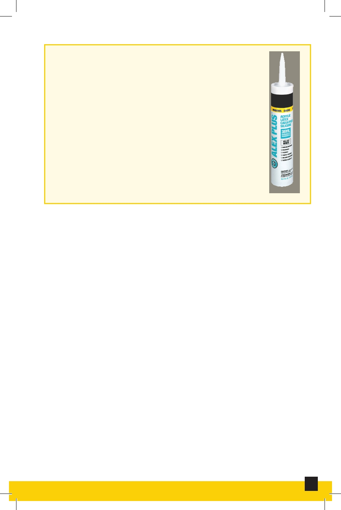

Acrylic Latex Caulk
A type of caulk that is considered very versatile.
It can be cleaned up with water, painted and
dries quickly. Best for caulking around wood
trim and thin joints in dry areas.
Acrylic Latex Caulk
Building Exterior Checklist
A checklist to identify potential problems before they
become costly to repair—or potentially hazardous to
residents and community team members.
Butyl Rubber Caulk
Primarily for outdoor use. Great sealant for storm windows
and doors, downspout and gutter seams. Fills larger joints
well when used with a caulking rod or backer rod.
2
Interior and Exterior Maintenance and Repair